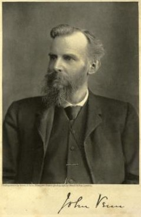

Álgebra de conjuntos
A Álgebra de conjuntos é um importante ramo da Matemática e com aplicações em diferentes áreas de conhecimento, entre elas a Computação. A linguagem de conjuntos se caracteriza por ser uma linguagem clara, concisa, rigorosa e que não dá margens a interpretações equivocadas. Por apresentar essas características, ela é utilizada na organização de informações e resolução de problemas ligados a várias áreas, como a computação. O livro de Benzecry e Rangel (2008), inteiramente dedicado à Álgebra de Conjuntos, traz em sua primeira parte, nas páginas 1 a 6, um resumo com os principais tipos de conjuntos e as diferentes formas de representá-los. É uma ótima oportunidade para aprofundamento dos estudos. BENZECRY, V. S. J.; RANGEL, K. A. Como desenvolver o raciocínio lógico: soluções criativas na teoria dos conjuntos. Rio de Janeiro: LTC, 2008.
Conjuntos
Conjuntos podem ser definidos como coleções não ordenadas de objetos que podem ser, de alguma forma, relacionados (FERREIRA, 2001). Em geral, objetos de um mesmo conjunto gozam de uma propriedade em comum. Costuma-se utilizar letras maiúsculas do nosso alfabeto para representar os conjuntos. Para descrever determinado conjunto, é necessário identificar seus elementos. Para tanto, pode-se proceder de três maneiras distintas: 1. Listar todos os elementos do conjunto. 2. Indicar os primeiros elementos do conjunto (presumindo que os elementos do conjunto possam ser ordenados) que denotem um padrão para uma listagem indefinida. 3. Escrever uma propriedade que caracterize os elementos que constituem o conjunto. Por exemplo: C = {x|x é um número inteiro e 4 < x ≤ 9 } . Escrever a propriedade característica dos elementos de um conjunto por meio de palavras é a maneira mais usual de descrever um conjunto. Isso porque, muitas vezes, ao se trabalhar com conjuntos que possuem um número muito grande de elementos (ou até mesmo conjuntos infinitos), a listagem de todos os elementos do conjunto não se torna viável. Há ainda uma maneira alternativa de representar conjuntos com forte apelo visual. Trata-se dos Diagramas de Venn.
Diagrama de Venn
John Venn (1834-1923) foi um matemático inglês, tendo-se licenciado na Universidade de Cambridge onde, depois, ensinou Lógica e Teoria das Probabilidades. Venn introduziu os diagramas em seus trabalhos baseado nos círculos eulerianos, por isso, alguns autores referem-se aos diagramas de Venn como diagramas de Euler-Venn (NOVAES, 2014).

John Venn introduziu os diagramas em um trabalho de lógica formal publicado em 1880, na Philosophical Magazine and Journal of Science, intitulado On the Diagrammatic and Mechanical Representation of Propositions and Reasonings (Da representação mecânica e diagramática de proposições e raciocínios).
Na introdução desse trabalho, Venn afirmou:
Esquemas de representação diagramática têm sido tão familiarmente introduzidos nos tratados de Lógica durante o último século, que se pode supor que muitos leitores, mesmo aqueles que não fizeram nenhum estudo profissional de Lógica, possam ter familiaridade com a noção geral de tais objetos.
(VENN, 1880, p. 13, tradução nossa)
Porém, a primeira referência escrita conhecida do termo Diagrama de Venn surgiu apenas em 1918, no livro A Survey of Symbolic Logic, do lógico Clarence Irving Lewis (NOVAES, 2014).
VENN, J. On the Diagrammatic and Mechanical Representation of Propositions and Reasonings. Philosophical Magazine and Journal os Science, Londres, v. 9, p. 1-18, 1880.
Os diagramas de Venn consistem em círculos (que podem estar intersectados), os quais representam os conjuntos. No interior dos círculos são listados os elementos do conjunto. Por exemplo, o conjunto C = { x|x é um número inteiro e 4 < x ≤ 9 }
pode ser representado pelo diagrama em destaque:
Conjunto C representado pelo Diagrama de Venn
 Fonte: elaborado pelo autor.
Um conjunto é chamado de finito quando sua cardinalidade é um número inteiro, caso contrário, é chamado de infinito. Um conjunto é chamado de conjunto vazio quando sua cardinalidade é igual a zero, ou seja, é um conjunto desprovido de elementos.
Os conceitos estudados nesta webaula também são apresentados de forma bastante didática por Souza (2016) na Unidade 1 de seu livro, nas páginas 1 a 12. São abordadas as diferentes formas de notação e representação de conjuntos. Vale a pena conferir!
SOUZA, J. A. L. Lógica matemática. São Paulo: Pearson Education do Brasil, 2016.
Fonte: elaborado pelo autor.
Um conjunto é chamado de finito quando sua cardinalidade é um número inteiro, caso contrário, é chamado de infinito. Um conjunto é chamado de conjunto vazio quando sua cardinalidade é igual a zero, ou seja, é um conjunto desprovido de elementos.
Os conceitos estudados nesta webaula também são apresentados de forma bastante didática por Souza (2016) na Unidade 1 de seu livro, nas páginas 1 a 12. São abordadas as diferentes formas de notação e representação de conjuntos. Vale a pena conferir!
SOUZA, J. A. L. Lógica matemática. São Paulo: Pearson Education do Brasil, 2016.